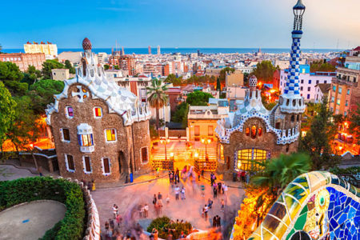
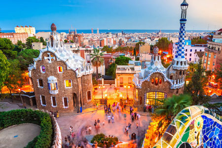
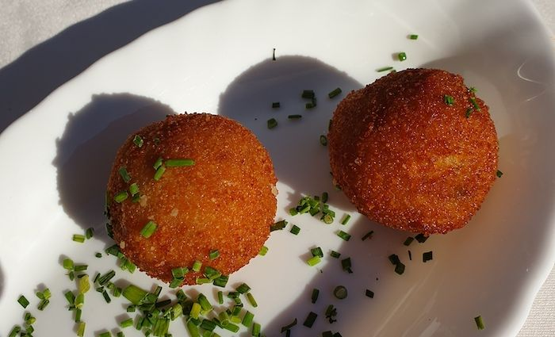
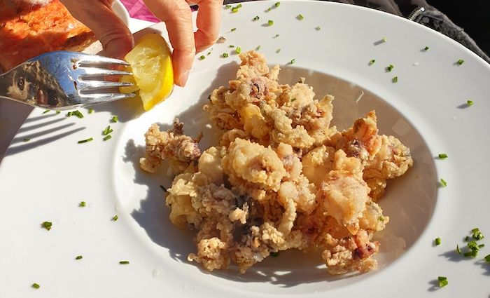

Barcelona, the cosmopolitan capital of Spain’s Catalonia region, is known for its art and architecture. The fantastical Sagrada Família church and other modernist landmarks designed by Antoni Gaudí dot the city. Museu Picasso and Fundació Joan Miró feature modern art by their namesakes. City history museum MUHBA, includes several Roman archaeological sites.
 

Paella

As a well-known destination for foodies, Barcelona offers up some of the best Paellas you can find in Spain. While Valencia is definitely the capital of Spanish Paella Barcelona is no slouch in the rice department. The dish is prepared with the special Bomba rice in Barcelona. The different rice makes Barcelona a great place to enjoy Paella!The dish is a combination of shellfish and seafood cooked together with a tomato sauce base. A “sofrito”, fish stock, and rice is combined to make one of the great dishes of Spanish cuisine. Those who are not fans of seafood don’t need to despair as most restaurants specialize in meat and vegetable Paella as well.
Croquettes
The French are believed to have invented the croquette, but “invention” is only the first step. Spaniards would argue that they made croquettes an art form! One of the most beloved of all tapas is the simply delicious “croqueta” which is due to how cheap and delicious they are. They ar made by breading and frying a variety of ingredients held together by a thick bechamel sauce that becomes a rich and irresistible base of flavor. Bar tfar the most popular one is the croqeta de Jamón which is flavored with the mouthwatering flavor of cured Spanish Iberian ham. Don’t stop there though, you will find that the variety of croquetas offered from place to place is one of the best parts of stopping into a tapas bar as the creativity put into these little crispy pieces of heaven.
Patatas Bravas

While patatas bravas are a favorite around the entire country Barcelona is a great place to tuck into some perfectly fried potatoes lovingly covered with a special spicy “bravas” sauce. for many bars this is a signature dish as the variety and styles of this sauce can be really different from place to place. there are two main styles that you will come across, one is the more common mayonnaise based one with packed with lovely spices, and the other is the tomato based one that usually has a lovely tanginess of vinegar that mixes so well with fried potatoes.
Fried Chipirones
Fried squid or Calamari in the US are normally small lightly breaded rings that are fried and crispy! It can obviously be delicious depending on where you go. Here in Spain, the love affair with fried squid goes to the next level. There are multiple variations and ways to prepared them. For me the best of which is Chipiriones Fritos. They are extremely small squid about the size of popcorn that is lightly floured and fried to a satisfying crunchiness. When traveling to Spain many people experience Chipirones and simply cannot get enough before they have to return home. If you love crispy fried foods then this may end up being one of your all-time favorites. Not to be missed though are the large battered and fried rings of squid called “Calamares a La Romana”.


Barcelona, Spain
+34 789789789
The best place for brave soul!